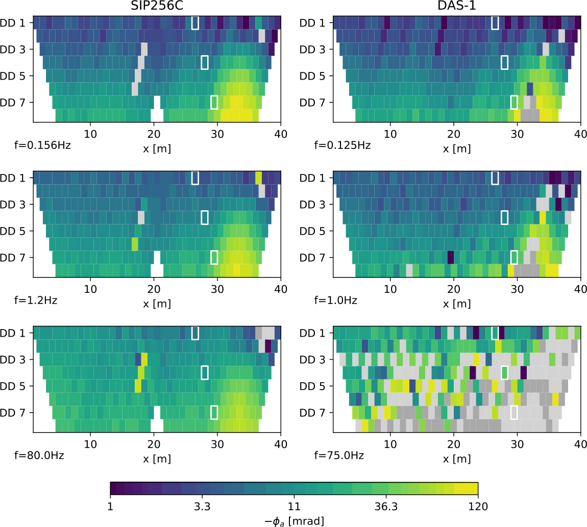
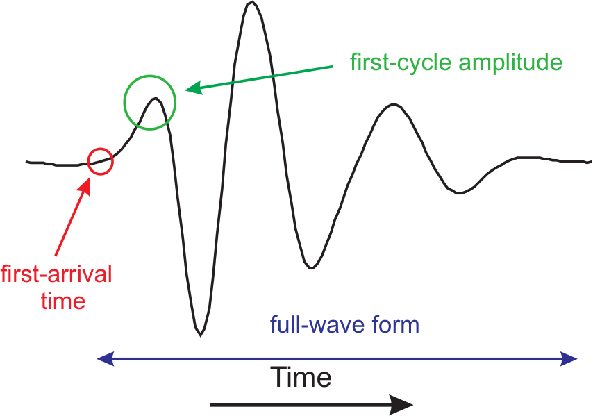
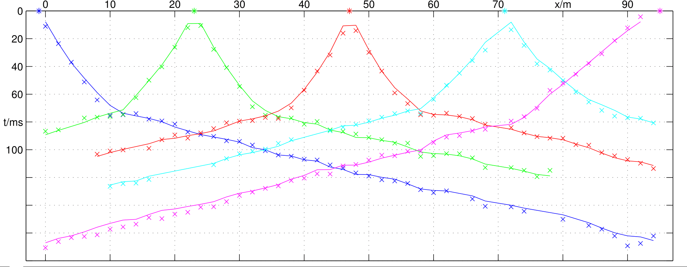
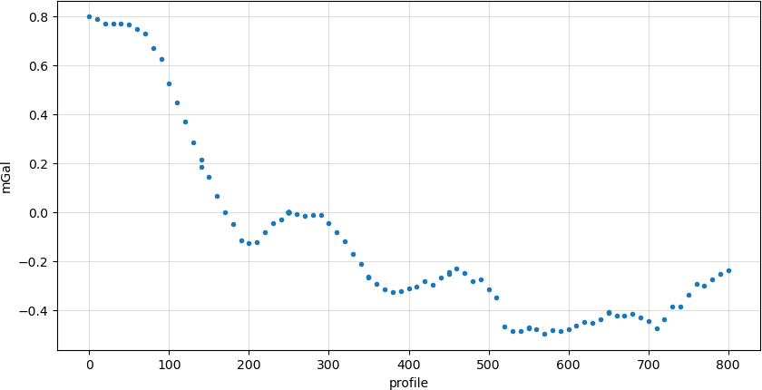
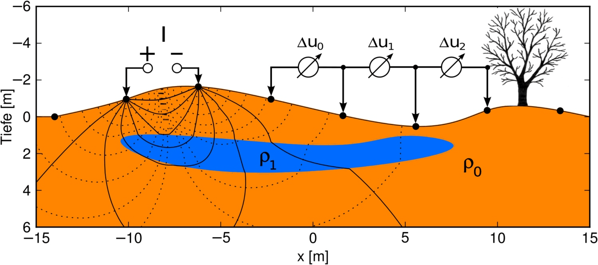
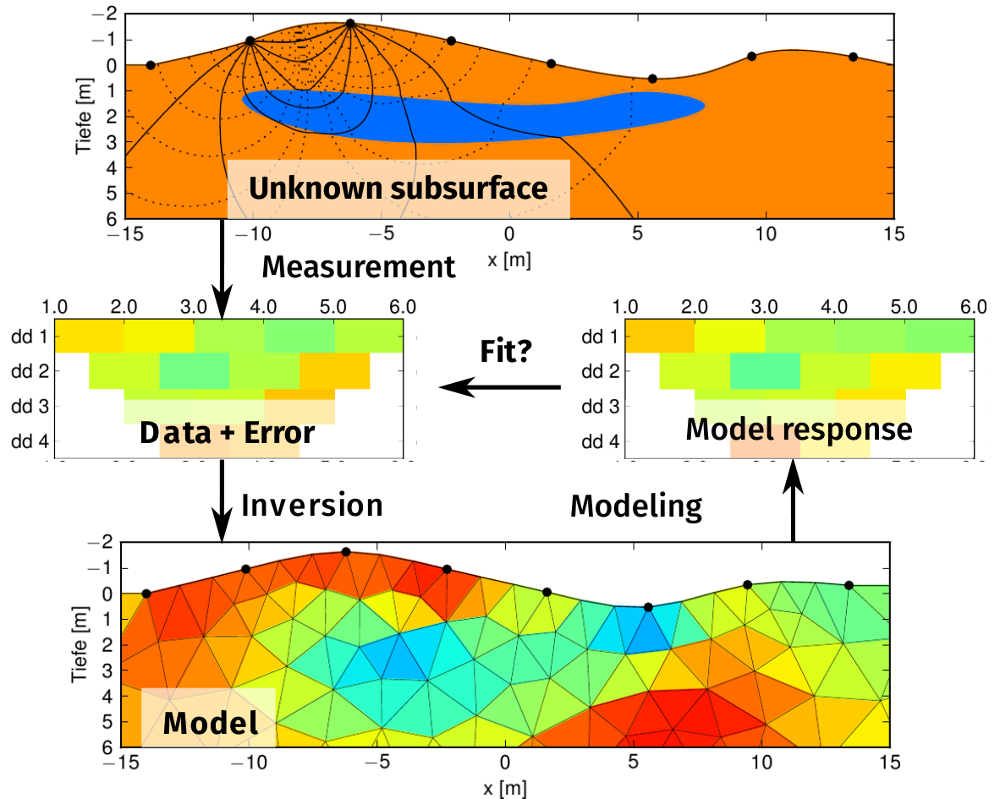
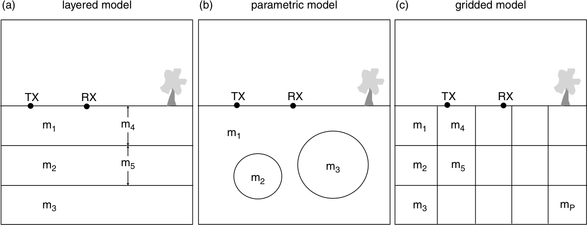

1 Introduction
1.1 Data
In geophysics, we measure many different types of data depending on the physical method being used.

- left: ERT/IP pseudosections for different frequencies
- single values
- often arranged logically
view on data important - sometimes associated to space
1.1.1 Data in seismology
time series of acceleration, velocity or position

1.1.2 Data in travel-time tomography
traveltimes between shot and geophones

1.1.3 Data in gravimetry

1.1.4 Data in electrical resistivity tomography (ERT)
current and voltage combinations

1.1.5 Data organization
- can be a discretized function of space, time or frequency, and plotted as such (curves)
- can depend on several sensor (shot/geophone, ABMN) and visualized as several curves or a coloured matrix (crossplot, pseudosection)
Data are subsumed in the data vector \[\textbf{d}=[d_1, d_2, \ldots, d_N]^T\] consist of true model response \(\bf f(m)\) plus noise \(\bf n\): \(\bf d=f(m)+n\)
1.2 Geophysical Workflow
- Data acquisition
- Preprocessing (QC, filtering)
- Parameterization (mesh)
- Inversion
- Fit of data & model response
- Postprocessing & visualization
- Interpretation

1.3 Model
- numerical parameterization of subsurface (our assumption)

1.3.1 Model types
subsurface described by model vector \(\textbf{m}=[m_1, m_2, \ldots, m_M]^T\)
Independent parameters:
- seismology: earthquake location, stress, principal axis
- gravity: position and depth of anomaly, size, density contrast
- spectroscopy (e.g. SIP): function parameters (e.g. Cole-Cole)
- layered model thicknesses and values (\(\rho\), \(v\))
subsurface described by model vector \(\textbf{m}=[m_1, m_2, \ldots, m_M]^T\)
Discrete functions of space, time, frequency
(same property aligned along axes)
- refraction: depth (and velocity) of refractor
- distribution of a parameter in space (and time)
- spectroscopy: Fourier or Debye distribution
- e.g. 2D/3D resistivity/velocity/density distribution
1.4 Inversion
\[ \vb d \approx \vb f(\vb m) \]
\[ \vb d = \vb f(\vb m) \]
Because \(\vb d\) contains random noise not to be explained.
1.4.1 Minimization problem
\[ \Phi_d=\|{\vb d - f(m)}\|^2_2 = \sum_i^N (d_i-f_i(\vb m))^2 \rightarrow \min \]
Take into account errors: Explain model within error (\(\boldsymbol{\epsilon}\)) bounds \[ \Phi_d = \| \frac{\vb d-f(m)}{\boldsymbol{\epsilon}}\|^2_2 = \sum_i^N \left(\frac{d_i-f_i(\vb m)}{\epsilon_i}\right)^2 \| \rightarrow \min \]
error model \(\boldsymbol{\epsilon}=[\epsilon_1, \epsilon_2, \ldots, \epsilon_N]^T\) (assumption of noise standard deviation)
1.4.2 Correctness
- There is a solution,
- it is uniquely defined &
- depends steadily from input data (small variations lead to small model deviations)
- There is no model to fit the data perfectly
- Many models can fit the data within errors
- Small data variations can lead to large model deviations
1.4.3 Occam’s razor - a fundamental rule
Pluralitas non est ponenda sine neccesitate!
(William of Ockham, Scottish philosopher and theologian, 14th century)
Entities must not be multiplied beyond necessity.
Of two competing theories, the simpler explanation is to be preferred.
From all models fitting the data, choose the simplest!